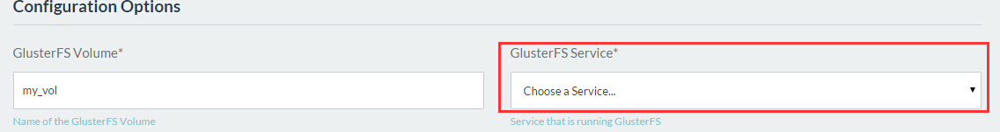
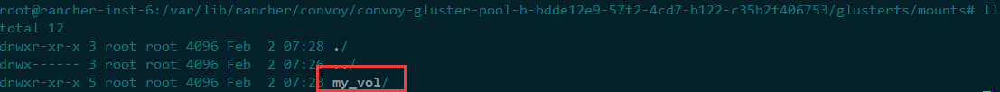
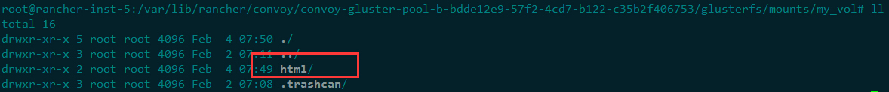

关于Convoy的实现方式已经在之前的文章中介绍过( Rancher架构分析)，这里我们主要进行一次实践，来体验一下Convoy如何使用。
如之前所介绍，Convoy需要连接后端存储，这里我们使用一下比较简单的GlusterFS，对于它我们可以用host部署或者直接用docker镜像创建服务。
对于container部署方式，通过docker hub应该很容易找到gluster-centos & gluster-fedora，选择自己擅长的在rancher中部署即可，这里需要注意的是目前的镜像是有问题的，dockerfile中标记VOLUME的地方引号有问题，如果你在使用时改问题依然没修复，建议你修改dockerfile重新build镜像。如果还想再懒一点，那就直接用rancher-catalog里面的Gluster FS，懒人专供。
对于host部署方式，只需安装几个package即可，由于我们只是体验所以部署一个节点接口，如ubuntu可以参考如下方式:
$ add-apt-repository ppa:gluster/glusterfs-3.7
$ apt-get update && apt-get install glusterfs-server
GlusterFS部署完毕后，我们需要创建volume，并启用之:
$ gluster volume create my_vol <local_ip>:/opt/brick1 force
$ gluster volume start my_vol
# 查看volume状态
$ gluster volume info my_vol
接下来我们要在rancher cluster上部署Convoy服务，我们可以使用rancher-catalog里面的convoy-glusterfs来直接部署，当然如果你有定制化的东西，可以把compose文件下载下来修改后通过rancher-compose来部署。
需要注意的是GlusterFS Service这个配置，如果你用rancher service来部署GlusterFS那这里直接选择该服务即可，如果使用了外部的GlusterFS服务，那么需要创建一个External Service来关联外部服务，然后此处选择该Service即可。
部署完毕后，会在每个host上创建convoy-agent服务，同时只创建一个Convoy-storage-pool服务。若在Rancher UI上看到相关的Service都正常，那么再在host检查一下对应的挂载目录，是否能访问。
完成以上，基础环境则大功告成，接下来就是找个应用来测试一下。
我们使用nginx镜像来测试一下，这里把compose文件放出来，体验一下就了解了，这里需要注意的是volume_driver对应的就是Storage Pools中的名字， 我的是名字是convoy-gluster-pool-b，所以:
#docker-compose
ngx-k:
labels:
io.rancher.scheduler.global: 'true'
io.rancher.scheduler.affinity:host_label: service=storage
tty: true
image: registry.neunn.com/nginx
stdin_open: true
volume_driver: convoy-gluster-pool-b
volumes:
- html:/usr/share/nginx/html
#rancher-compose
{}
部署完成后，在任意一个容器中修改/usr/share/nginx/html 的内容，即可同步到所有容器中。值得注意的是你会在宿主host上看到创建的对应目录:
